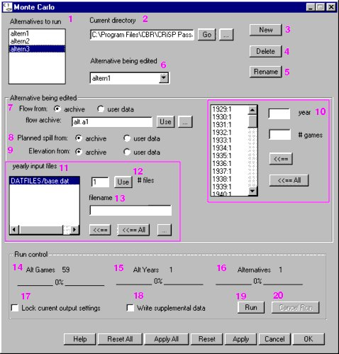
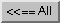
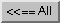

Set Monte Carlo Parameters
Parameters for each alternative are set in the Monte Carlo window. The Monte Carlo window is divided into three panels: Alternatives, Alternatives being edited and Run control. Each panel is described separately.

Monte Carlo window
Alternatives
In the Alternatives panel (upper portion of the window), you can select alternatives to run, select an alternative to edit, Create New Alternatives, and Delete Existing Alternatives. It has the following controls:
- Alternatives to run (1): Displays a list of existing alternatives you can edit and run. Selected alternatives in this list will be computed when you click Run.
- Current directory (2): Identifies the working directory where files are located and where output files will be written, initially this is the CRiSP home directory.
changes the current directory to a directory you specified by typing in the text box.
browses your local system to select the working directory. Note. Unix users, this function does not work properly. Use the text box and to change working directory.
- New (3): Opens a dialog box in which you can type the name of a new alternative and adds the new alternative name to the Alternatives to run list and the Alternative being edited list (see Create New Alternatives).
- Delete (4): Removes the selected alternative in the Alternative being edited list from disk (see Delete Existing Alternatives).
- Rename (5): Opens a dialog box in which you can type the new name for the selected alternative in Alternative being edited list.
- Alternative being edited (6): Displays a list of existing alternatives you can edit. The selected alternative is loaded into the Alternative being edited panel and is ready to be edited.
Alternative being edited
The Alternative being edited control panel displays information based on the alternative selected in the Alternative being edited list (6) in the Alternatives panel, and sets flow and other model information. It contains the following controls:
- Flow from (7): Specify the source of flow from an archive file or user data.
A. If you select archive as source of flow, follow these steps:
- flow archive: Identify the flow.archive file by typing the name of the file in the text box and click Use, or by clicking to browse your local system to select the appropriate file. This file must be in a format that COMPASS can read. The COMPASS distribution includes single year flow files (flow.data directory) for 1961 through 1994. Flow archive files typically contain period averaged flows and spills at dams as computed by a hydroregulation model such as HYSSR or HYDROSIM for a number of water years, or games, each identified by a year (e.g. 1938).
- - Typically, the archive will contain specifications for spill amounts at each dam. This information, however, is also specified in the yearly input files. To avoid confusion, COMPASS requires that you decide which spill information to use: the data from the archive or the data from the .dat file. In the same manner, you will also need to specify the source of the elevation information.
- Planned spill from (8): Select source of planned spill information from period averaged data in the flow archive file (archive) or from hourly spill in yearly input (11) file (user data).
- Elevation from (9): Select source of reservoir elevation information from period averaged elevation in a flow archive file (archive) or from daily elevation in yearly input (11) file (user data).
- Customize games (10): Customize games with this control to run multiple games of different water years. After you select an archive, this window displays a list of all the water years in the archive, e.g. 1929:1. Type the preferred number of games for each water year (zero is acceptable). Select a water year to edit the number of times to run each year in the text box. Click  to update the changes to the number of games. Click  to update all water years for the number of games typed into the # games text box. Click Apply All / Apply to save changes made to the alternative.
to update the changes to the number of games. Click  to update all water years for the number of games typed into the # games text box. Click Apply All / Apply to save changes made to the alternative.
B. If you select user data as source of flow, follow these steps:
- Planned spill and Elevation data are automatically read from a Yearly Input Data File. Use Spill Schedule and Elevation windows, respectively, to change the values and make sure to save your changes to the yearly input data files that will be used. The changes must be saved to disk.
- # games (10): Set the number of games to run for each yearly input data file. Apply the changes by clicking Apply. You must first turn off variance suppression in Runtime Settings (Run menu) and save the settings to the yearly input data file being used.
- yearly input files (11): Specify a Yearly Input Data File to be used for each power year in the alternative. You can specify any number of years for the alternative. Yearly input data files contain all the parameters that describe fish behavior, reservoir properties, spill schedules, elevation and loss information, dam parameters, releases, and river information. You can use a Control File to "mix and match" pieces of information from various files. Once you have put together the pieces of interest, it is recommended that you write this information to a separate
.dat file for later use.
- Use # files (12): Specify the number of years to be used in the alternative by typing the number in the text box and clicking Use. The yearly input files list will update to contain the specified number of entries. If you want to specify only one year, you do not need to enter a value in this box.
- filename (13): Select a line in the yearly input files list and identify the yearly input file by typing the name of the file in the text box or by clicking to browse the local file system to select a file. Click to update the yearly input files list with your selection. Click to update all yearly input file entries to use the file specified in the text box even if other selections have already been applied. Click Apply All / Apply to save changes made to the alternative.
Run control
The Run control panel displays information about the alternatives and the status of a Monte Carlo run. It has the following controls:
- Alt Games (14): Identifies the number of model runs to be completed for each year input data file of the alternative selected in the Alternative being edited list. After Run execution has begun, the display will update the information and status of completion of the alternative being run.
Note. This is not the total number of games to be run when Monte Carlo is started.
- Alt Years (15): Identifies the number of years to be run of the alternative selected in the Alternative being edited list. After Run execution has begun, the display will update the information and status of completion of the alternative being run.
Note. This is not the total number of years to be run when Monte Carlo is started.
- Alternatives (16): Identifies the total number of alternatives to be run determined by the alternatives highlighted in the Alternatives to run list.
- Lock current output settings check box (17): If selected (on), output settings specified in the Output Settings windows will override any output settings specified in the yearly input data files for each Monte Carlo alternative run. Lock current output settings is paired with Lock Output Settings (Run menu). You can turn the option on or off in by selecting Run
 Lock Output Settings or selecting Lock current output settings (i.e. making a selection in either place automatically updates both).
Lock Output Settings or selecting Lock current output settings (i.e. making a selection in either place automatically updates both).
- Write supplemental data check box (18): If selected (on), COMPASS writes Messages from Log Window to the
summary.altern# file on disk (default setting is off).
- Run (19): Starts the Monte Carlo Mode run using the alternatives highlighted in the Alternatives to run list. See the Run Monte Carlo Interactively, Run Monte Carlo in Batch Mode and Set Monte Carlo Output and Runtime Settings sections for important information about running COMPASS in Monte Carlo Mode.
- Cancel Run (20): Stops the Monte Carlo run currently in progress. It may take some time for the model to stop a Monte Carlo run process.
The Monte Carlo window also includes the following:
See the Monte Carlo section for the list of related sections.